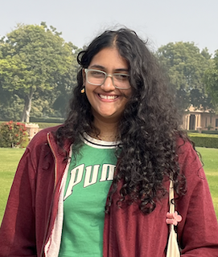

|
Durga Sharma
I am an undergrad at the University School of Automation and Robotics, New Delhi, where I am currently pursuing my bachelors in Artificial Intelligence and Machine Learning. I've worked with Prof. Johari, on sentiment analysis and applied LLMs for code-mixed and code-switched text. Currently, I'm working with Jhansi Mallela on prosody driven disambiguation in spoken inputs, and with Dr. Chiranjit Pal on bird sound classification using CNNs. I’m interested in research involving speech and language processing, as well as network analysis, and I’m always looking to learn more and contribute to new projects in these areas. Email / CV / Google Scholar |
 |
Updates
[Jul. 2025]
Summer Research Intern at IIT-BHU.
[Jun. 2025]
Attended the IIIT's Advanced Summer School on Natural Language Processing, IIIT Hyderabad.
[Dec. 2024]
Poster presentation at CODS-COMAD, held at IIT Jodhpur.
[Jun. 2024]
Summer Research Intern at GGSIPU, New Delhi.
[May 2024]
Presented my research paper at ICDIS 2024.
[Dec. 2023]
Attended ACM India winter school on 'Data Science for Social Good'.
[Jun. 2023]
Attended ACM India summer school on 'Cybersecurity'.
|
ResearchI am interested in speech and language processing, deep learning, large language models, and social network analysis. At present, my focus is on multilingual NLP, with a specific emphasis on Indian languages. |
|
Translation of Code-Mixed and Code-Switched Tweets using LLMs for Enhanced Sentiment Analysis
Durga Sharma, Rahul Johari
CODS-COMAD, 2024
poster Evaluated Hugging Face models, OpenAI and Anthropic for translating and analyzing code-mixed and code-switched tweets, enhancing sentiment accuracy. Benchmarked LLMs to determine the best model for accurate sentiment analysis of mixed-language content. |
|

Sentiment Analysis of Twitter Feeds
Durga Sharma, Rahul Johari
ICDIS, 2024
paper Analyzed 30,000 tweets about Indian athletes over six months, using `googletrans` to translate non-English tweets and `nltk` for sentiment analysis, scoring each tweet from -1 to +1. Created sentiment vs. time and average sentiment vs. time graphs to track and visualize changing public sentiments towards athletes. |
|
Design and source code are from Jon Barron's Website.
|